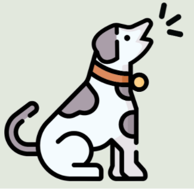
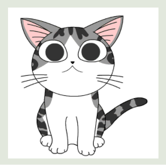

Press the button and allow microphone access

I can hear — nothing yet
Live Predictions
Detections

Dog 0
Cat 0Detection Log
- No detections yet
Play a sound — barking or meowing — and I'll tell you which animal it is
Press the button and allow microphone access

Dog 0
Cat 0